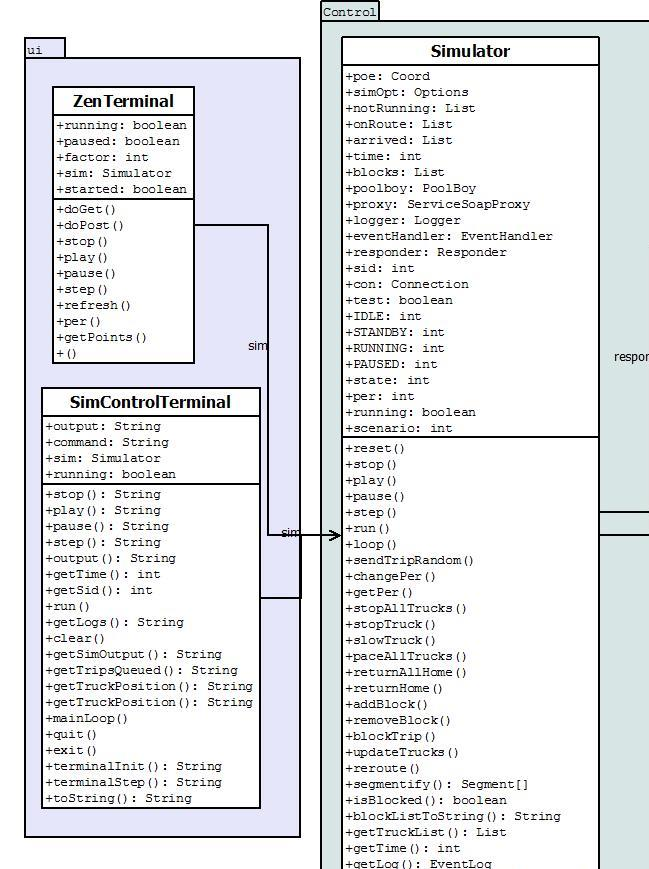
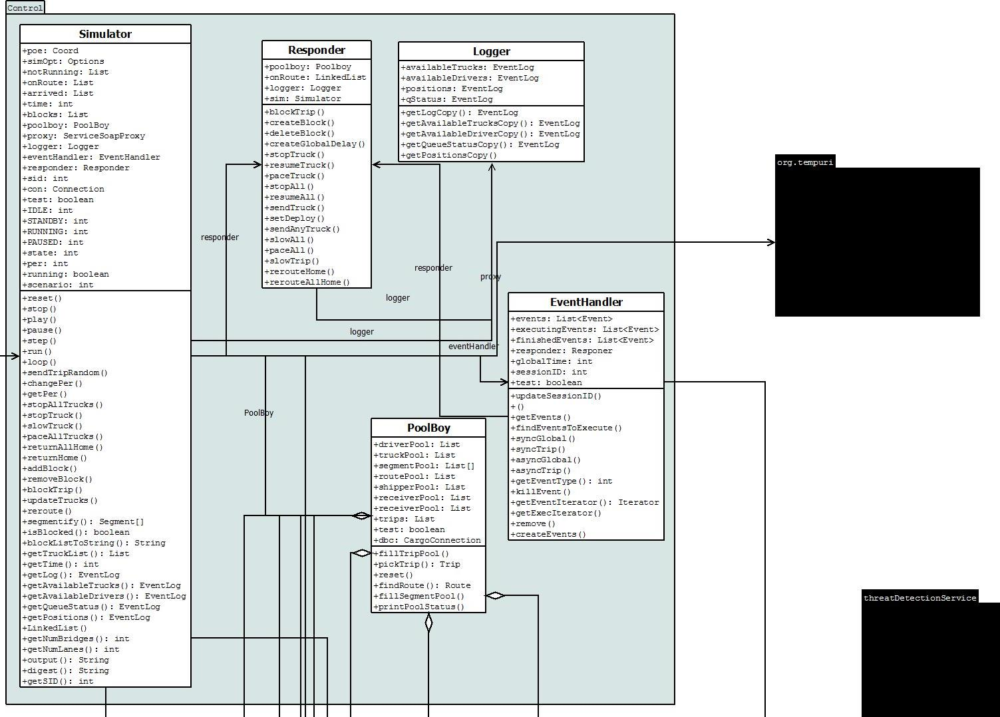
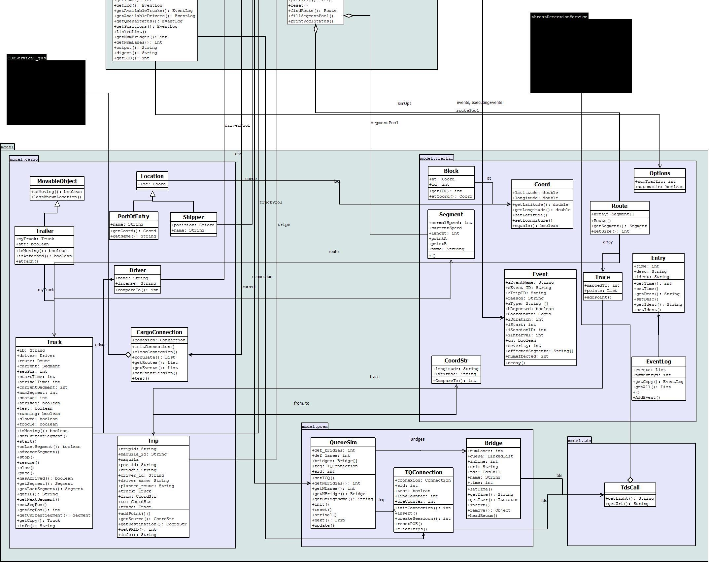

Cargo Simulator Overview
The simulator is divided into control,
model and ui modules. In the source code they are organized as packages.
We will review them each, explaining their fuctionality and the concepts behind them
The simulator was designed using the model, view and controller design principle
UI
The UI module handles the input and output interfaces from both the servlet and the terminal
Classes
- SimControlTerminal The class called when running the simulator from the terminal
- ZenTerminal This class serves as a interface between the back end and the http servlet
each web application installation will have one simulator back end, only one, even if there are various
accesses there will be only one simulator back end running
Control Flow
Whenever either one of the terminals are ran, a simulator static instance is created, this will be the one simulator for this installation
and the Terminal will procced to interact with the simulator. The simulator class will manage the rest of the features. For instructions
about running the simulator refer to the running instructions sections here: Running the Cargo Simulator
Diagram

Control
The control package contains all functionally controling classes such as managers,
handlers, the simulator itself and helper classes. We will briefly explain the part of each
class in the big solution and direct you to the javacode, which should be sufficient to
understand how to modify the code, and where to add extra functionalities
Classes
- Simulator
The main class for the system; it is the core of the simulator and
contains the main functionalities such as starting trips, stopping
trips and other simulator functionalities
- Logger
This class takes care of the output of the system as well as other logs
- Poolboy
In order to be able to send trucks or check routes a set of resource pools must be kept.
The Poolboy effectively manages the resources and regulatecyanog their usage
- EventHandler
The event handler class is responsible for handling the events extracted from the
database and calling the appropriate routines to address them
- Responder
The responder is an abstraction from the simulator for the event handler,
the responder provides all the abstract routines that the event handler might
need and may also provide composite methods from its own list of methods,
its purpose is that of avoiding any direct call to the simulator from the
event handler
Control flow
- A Simulator object is instantiated in a terminal, as described above
- The simulator in turn instantiates and initializes a Logger, PoolBoy, EventHandler and Responder
- The afore mentioned classes lead data from the web services accesing databases and GIS applications
- All the pools in the poolboy are loaded with this data, see the documentation above for more information of how this is done
- Once the simulator, the pools and everything else is set up, the simulator enters stadby mode, it is set up but it's not running
- The simulator is now in standby mode, waiting for a command. The simulator will react to terminal (Zen or SimControl)
As of now the simulator si set up, for information about running the simulator and behavior while the simulator is running refer to the
Running the Cargo Simulator section of the manual
Diagram

Model
The model packages contain all the classes required to create a simulator data structure and maintain it. It further divides into
subpackages
- model.cargo The cargo subpackage contains all the classes directly
related to the cargo aspect of the simulator, shippings, trips trucks and trailers.
- model.poem The PortOfEntryManager subpackage contains all classes
related to ports of entry and their management as a single object
- model.traffic The traffic subpackage contains all classes relating to the
modeling of traffic, traffic events ass well as traffic features, such as blocks in the road, it also contains routes and all the
necesary classes for modeling the traffic simulation
- model.tds The tds subpackage handles the interaction between the simulator and the threat detection system
Diagram
